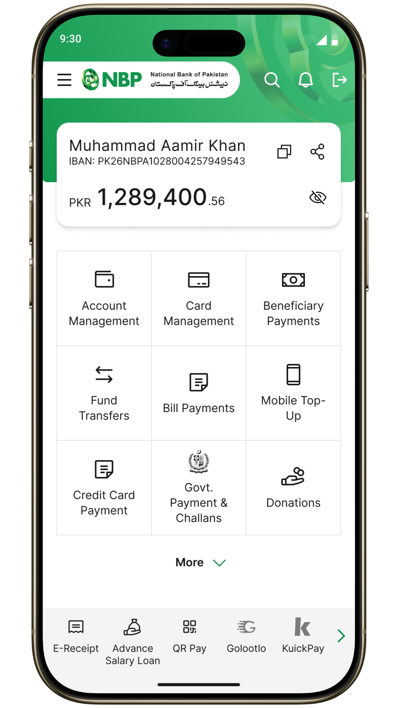
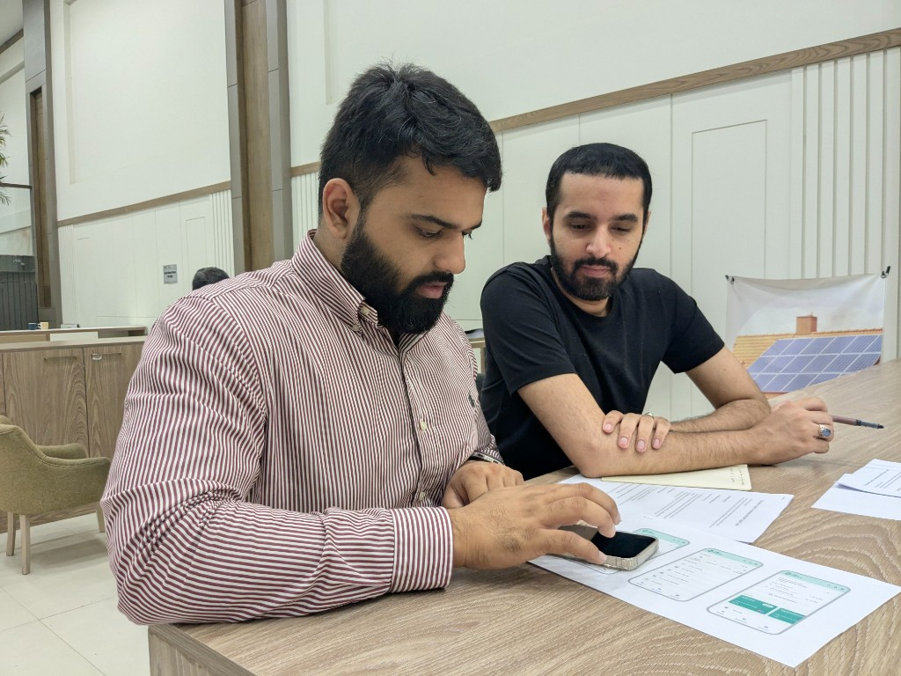
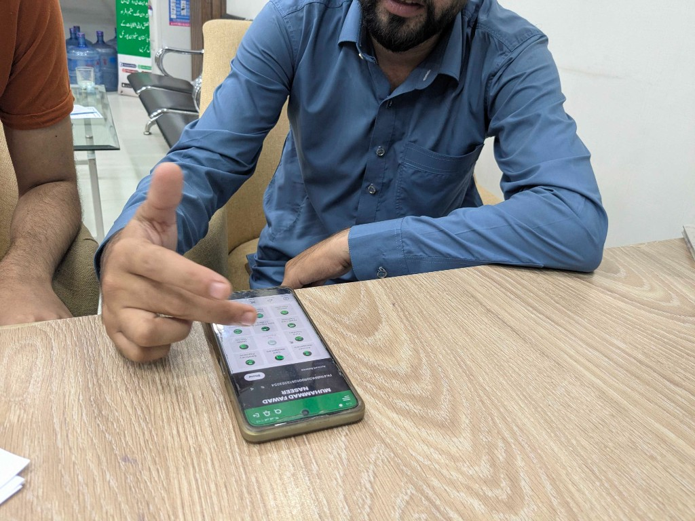
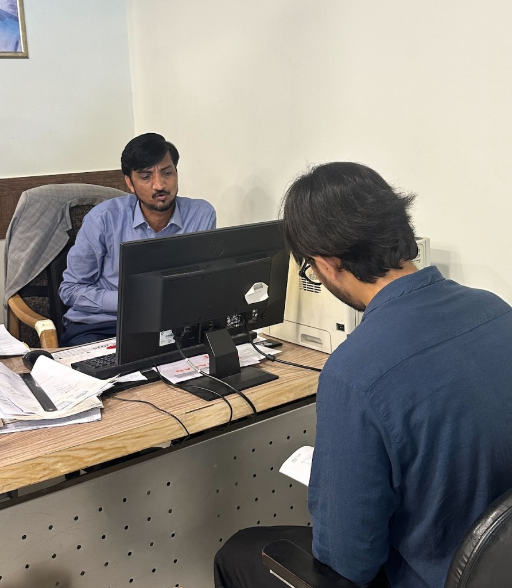
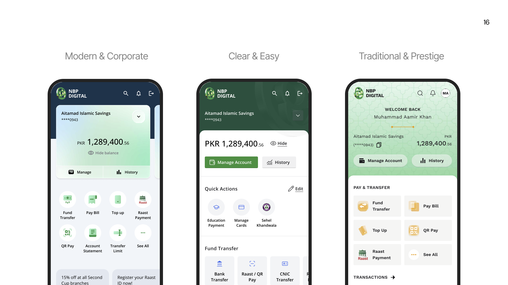
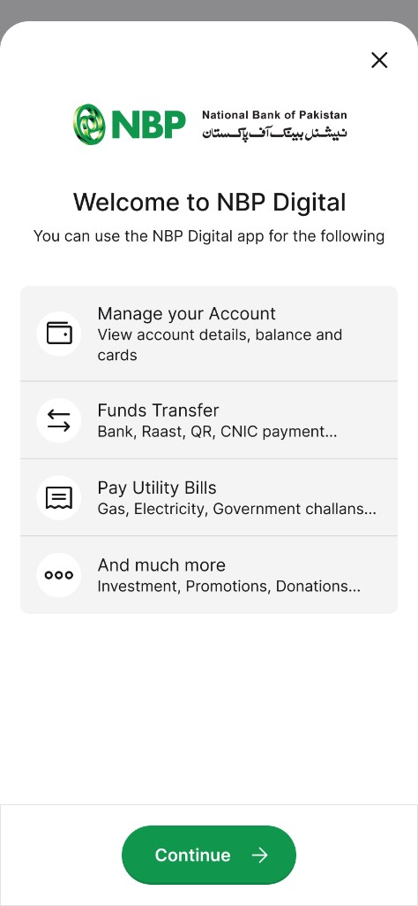
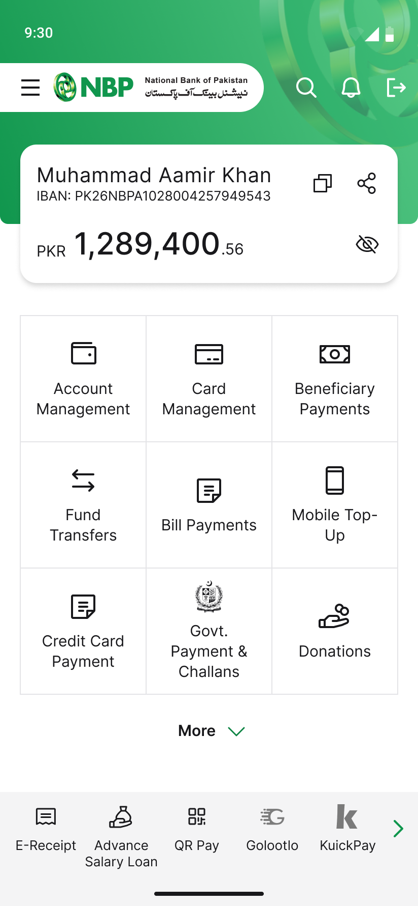
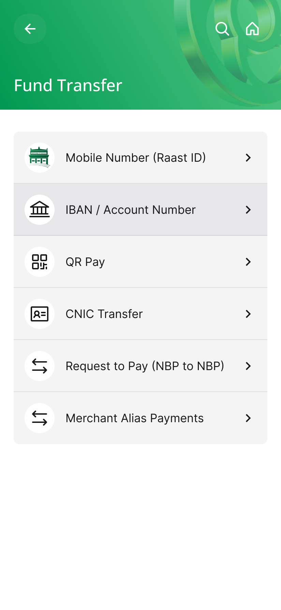
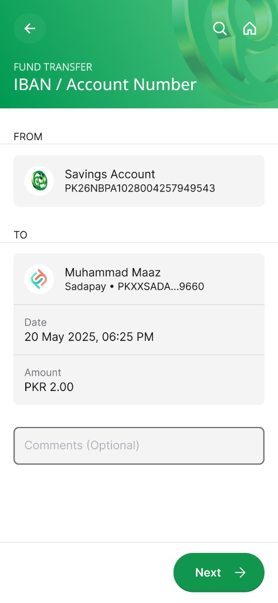
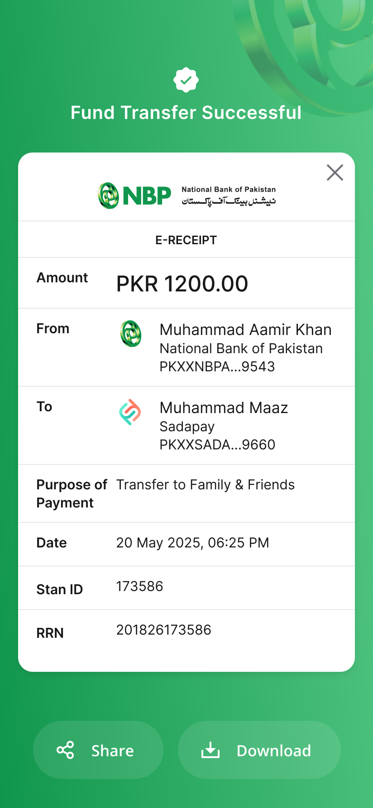

Welcome & registration
A clearer entry experience with a more logical flow that simplified the 7 convoluted steps for registration into 4 clear parts.

Redesigned the NBP Digital mobile-banking experience around clearer navigation, lower-friction transactions, and a more modern expression of trust.
The National Bank of Pakistan engaged Ideate Innovation to review and redesign its consumer facing NBP Digital app. The product had the core banking capabilities customers needed, but research pointed to friction in registration, difficulty finding key actions, and an interface that felt dated beside private-bank alternatives.
I was assigned the design lead for the engagement from Ideate Innovation. I worked with a team of user researchers and designers to research, conceptualize and redesign the app over a course of 6 months.
We combined a UX audit of the existing app with in-branch interviews of app users, staff conversations, and 1:1 discussions with NBP executive committee members.

Reviewing early design directions with branch staff.

Observing how customers use the existing app in branch settings.

Inquiring about recurring issues with branch staff during a field visit.
Research centered on three core personas: pensioners and senior citizens, young professionals, and public-sector employees. Pensioners in particular had memorized patterns in the app for recurring tasks like payments, statements, and balance inquiry, a key reason stakeholders were cautious about disruptive change.
Prefer familiar flows, larger touch targets, and consistency once patterns are learned.
Expect modern onboarding, faster transfers, and clearer status feedback.
Heavy users of salary, pension, and government-payment journeys.
Across the work, users valued NBP's institutional trust and core transaction features, while biometric registration failures, performance issues, crowded navigation, unclear limits, and weak status feedback eroded confidence.
The redesign was shaped by a UX audit, branch-level fieldwork, customer interviews, staff input, and executive committee reviews across Pakistan's 3 largest cities.
The initial phase translated research and stakeholder reviews into a practical direction: modernize the product, but protect the banking behaviors customers had already learned.
Leadership wanted to refresh the app with lighter visuals and a more vibrant use of NBP's iconic green.
Simplify categories, group related tasks, and make high-frequency actions easier to discover without crowding the home screen.
Use larger text, stronger hierarchy, and standard functional icons so the interface works for a broad customer base.
Make transfers easier to review with clearer status updates, receipts, history, and limits visibility.
Building on the design brief, I made three distinct home-screen concepts for stakeholder review. Each direction applied the same UI principles of accessibility, clearer information hierarchy, generous spacing, and native mobile patterns while testing a different balance of modernity, simplicity, and brand expression.
Feedback across the concepts highlighted trade-offs between familiarity and appeal to younger customers, scanability for older users, and how closely each direction felt aligned to the existing NBP brand. This review helped narrow the visual language carried into the final designs.

Three home-screen concepts explored in Phase 3: Modern & Corporate, Clear & Easy, and Traditional & Prestige.
With a direction agreed, I designed the key flows covered in the handover: sign-in, home, fund transfer, and bill payment, from entry and navigation through payment details, confirmation, and e-receipt.
A clearer entry experience with a more logical flow that simplified the 7 convoluted steps for registration into 4 clear parts.
Opened up NBP's green-and-white palette, foregrounded frequent actions, and replaced the dense catalog feel of the existing home screen.
Grouped menus and sub-menus into simpler categories, clarified transactions, and redesigned receipts so customers can review, complete, and share transactions with confidence.

Registration

Home

Transfers

Payment details

Transfer receipt
The final designs were presented to the bank's SteerCo, then handed over in Figma with color, typography, spacing, and component specs for the development partner building iOS and Android.
The new NBP Digital app was released in June 2026.
Launch ad for the redesigned NBP Digital app. Watch on YouTube.